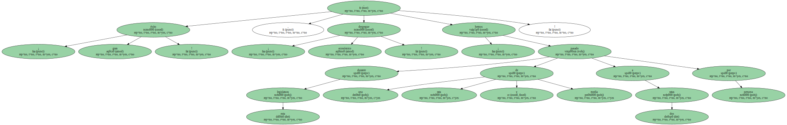
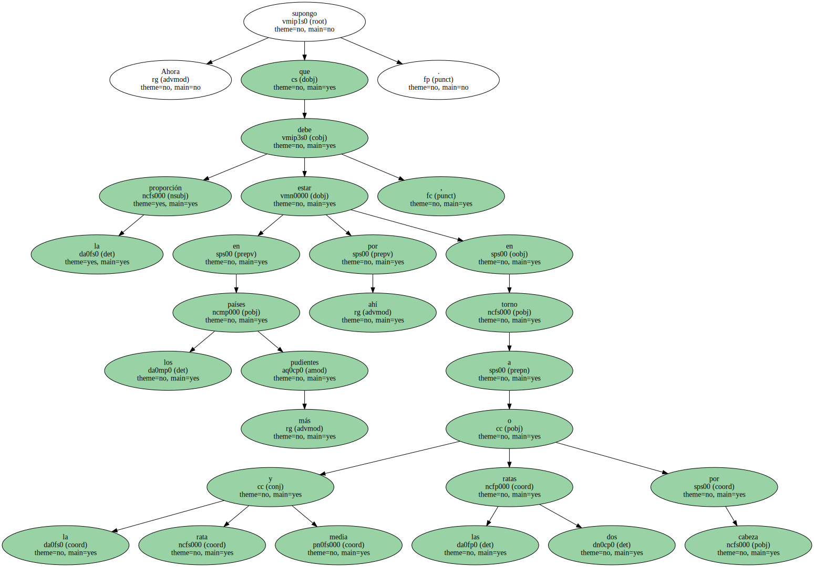
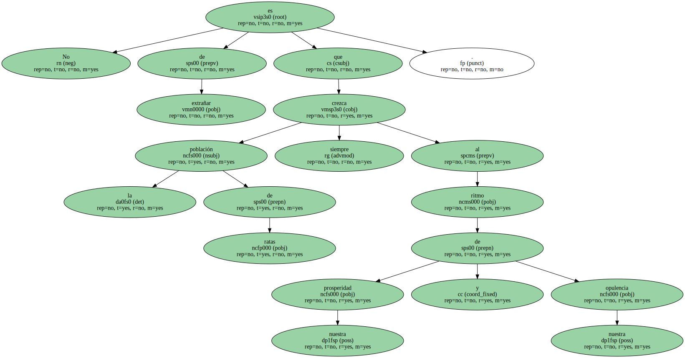
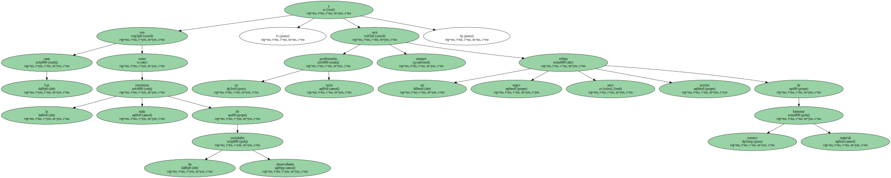
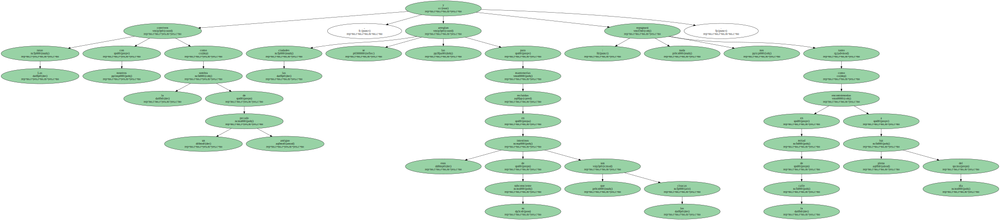
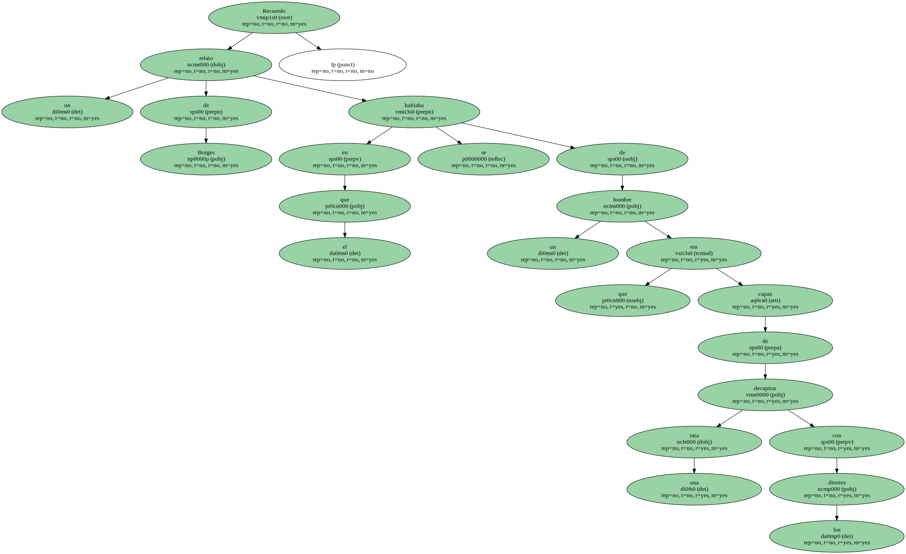
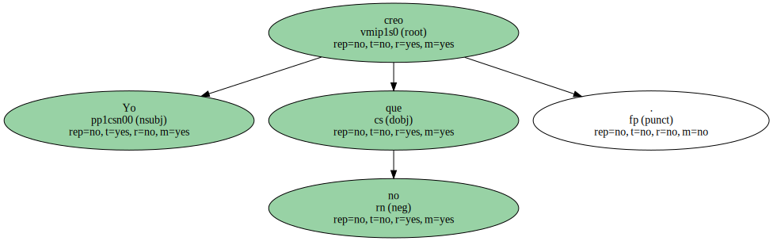
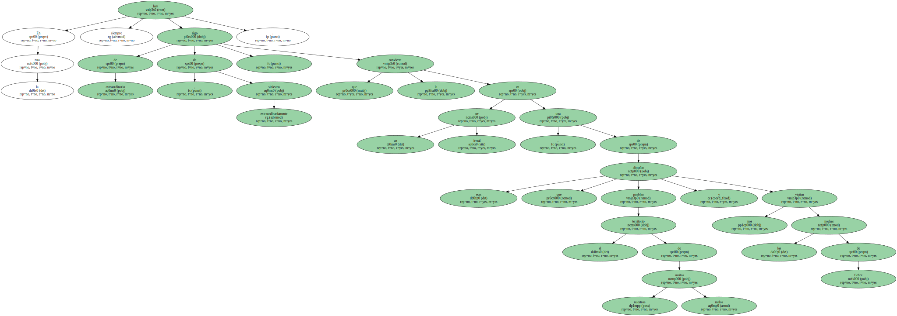

Imagínense.

No hablaríamos ya de la renta per cápita , sino de las ratas per cápita , y los gobernantes lo proclamarían con jactancia de ratitas presumidas.

¡ gran éxito ! , ¡ despegue económico ! , ¡ durante esta legislatura hemos pasado de una rata y media a dos ratas por persona.
Ahora supongo que en los países más pudientes la proporción debe estar por ahí , en torno a la rata y media o las dos ratas por cabeza.
En el Tercer Mundo , por el contrario , seguro que no andan muy lejos del famoso lema de los mosqueteros : una rata para todos y todos para una.
No es de extrañar que la población de ratas crezca siempre al ritmo de nuestra prosperidad y nuestra opulencia.
Las ratas son como la mala conciencia de las sociedades desarrolladas , y su sucia proliferación será siempre un negro pero preciso reflejo de nuestro bienestar material.
Las ratas conviven con nosotros como la sombra de un pecado antiguo , y las ciudades se las arreglan para mantenerlas recluidas en esos intestinos de su subconsciente que son las cloacas : nada nos repugnará tanto como encontrárnoslas en mitad de la calle a plena luz del día.
Recuerdo un relato de Borges en el que se hablaba de un hombre que era capaz de decapitar una rata con los dientes.
La imagen ( la más asquerosa que puede concebirse con tan asquerosa criatura ) me impresionó como sólo lo hacen las visiones de las pesadillas , y alguna vez me he preguntado si me había impresionado lo mismo en el caso de que no fueran ratas sino canarios los animales a los que aquel personaje arrancaba la cabeza de un mordisco.

Yo creo que no.
En la rata hay siempre algo de extraordinario , de extraordinariamente siniestro , que la convierte en un ser irreal , una de esas alimañas que pueblan el territorio de nuestros malos sueños y nos visitan las noches de fiebre.
